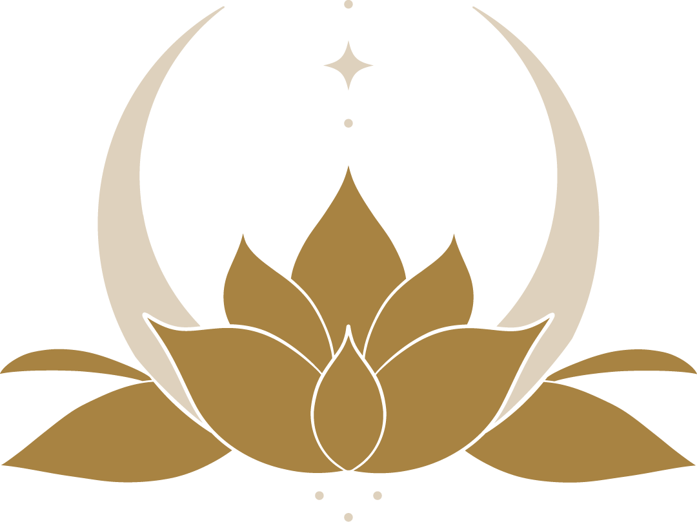
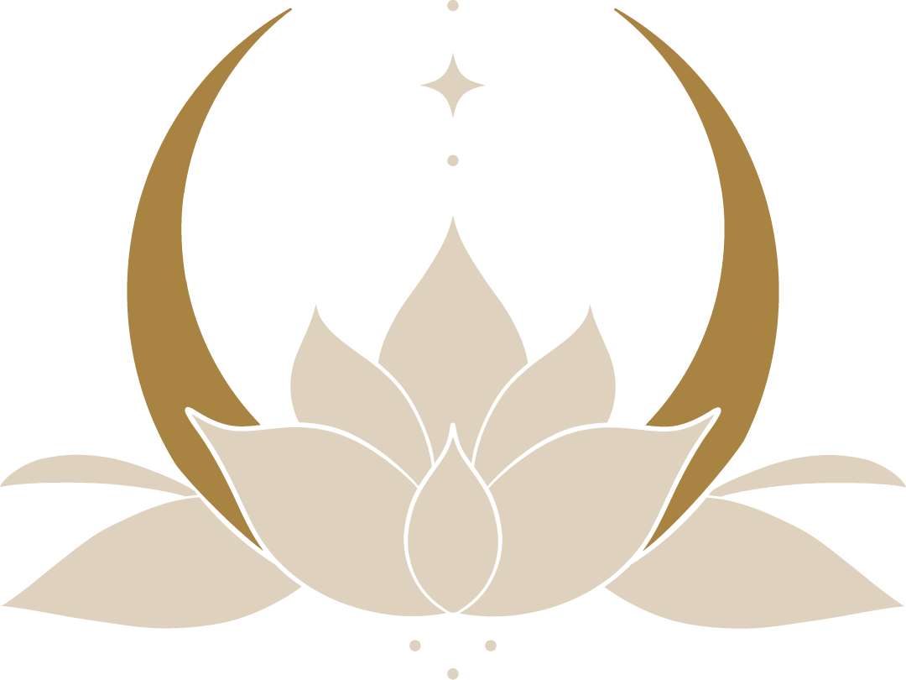
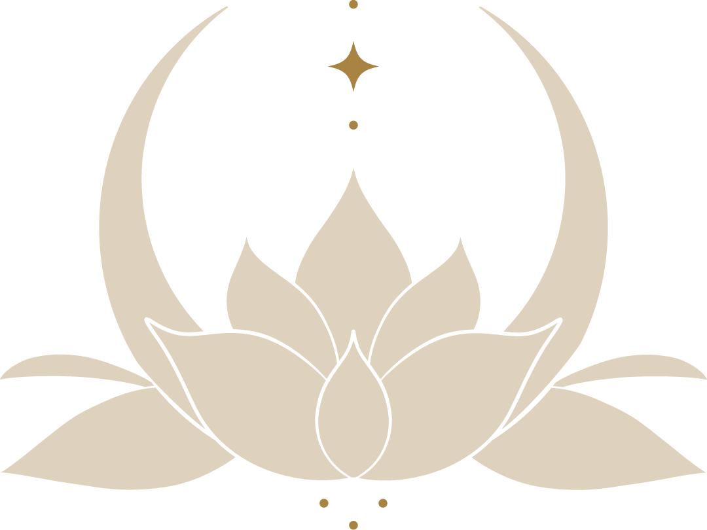
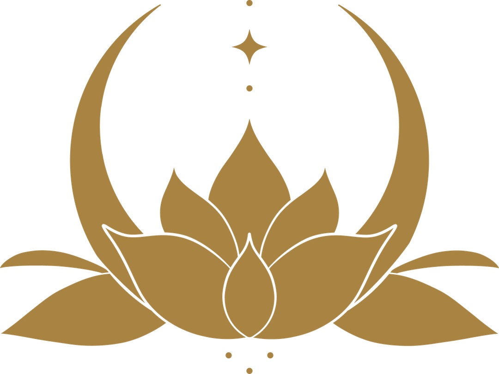

<div class="md:min-h-[160px] min-h-[90px]"></div>

{%comment%}

<!-- This is the Animation Section that should only show on Large Screens -->
<!-- <div class="max-md:hidden">
    <section class="px-5p">
        <div class="logo_animation-container">
            <h2 class="p-2 pt-4 text-center"> Meet the Logo </h2>

            
            
            
            
            <div class="z-0 text-part">
                <h3>The Lotus Flower:</h3> 
                <p>A symbol of truth, wisdom, transcendence, enlightenment and a metaphor for the soul’s journey in both <em>Buddhism and Yoga</em>. The lotus flower grows in the mud, through dark and murky waters and thus it is an image of beauty that comes though deeper reflection, challenging times, and a willingness to bring curiosity, courage and compassionate presence to all of life. It is said “no mud, no lotus”.</p>
            </div>
            <div class="z-10 text-part">
                <h3>The Crescent Moon:</h3>
                <p>Depicted in a number of traditions and meaning making systems, the crescent moon is seen as a symbol of <em>possibility, illumination, and wisdom.</em> It is at both the beginning and end of a lunar cycle, pointing to the power of aligning with cycles and change as a natural part of life. Thus, it can be a time of reflection and gathering what has been learned or experienced, releasing what does not need to be carried forward (waning crescent) and a time of setting intentions, putting energy toward new beginnings, new growth (waxing crescent).</p>
            </div>
            <div class="z-20 text-part">
                <h3>The Unalome:</h3> 
                <p>“As Above, So Below”: This quote speaks to the wisdom that <em>we are not separate from that which is bigger than us, that there is union is what appears to be opposites.</em> The story or meaning given to this truth is not dictated or offered at Wisdom’s Way—it is the individuals’ path to define that if so desired. At Wisdoms’ Way there is the acknowledgment of this interconnection and the space to explore how this orientation can provide greater connection, meaning, and purpose. In the logo “as above so below” is represented in the modernized unalome comprised of dots going through the center of the logo from ‘above to below’ culminating in an arrow symbolizing a life path. Within the unalome is a star symbolizing that our experience can be both influenced by and understood by what happens in the heavens and rhythms of nature.</p>
            </div>
            <div class="z-30 text-part">
                <h3>The Elements:</h3>
                <p>The elements of earth, water, fire, air and space are acknowledged (though the names and number may vary) and given qualities in various wisdom traditions including those at Wisdoms’ Way such as <em>yoga, meditation, and astrology.</em> A balance of these qualities as well as the knowledge of when to utilize the element or its elemental properties to attain balance or desired change is a part of living an aligned and empowered life. In the logo <em>earth</em> is represented by the lotus, <em>water</em> is represented by the crescent moon, <em>fire</em> is represented by the star within the unalom, <em>air</em> is represented by the arrow shape the unalom makes, and <em>space</em> is represented in the container created by crescent moon and the lotus, the womb in which all else manifests.</p>
            </div>
        </div>

    </section>
    
    <div class="fixed bottom-0 z-10 w-screen">
        <p class="text-center">scroll down</p>
        <div class="absolute bg-gold left-[48.5vw] -top-14 w-8 h-8 rounded-full bouncing-animation text-center text-3xl">&#8609;</div>
        <div class="shorty-screen">
            {% include site-footer.html %}
        </div>
    </div>
</div> -->

{% endcomment %}
<!-- 
<div class="">
    <div class="grid p-5p">
        <h2 class="p-4 py-6 text-center"> Meet the Logo </h2>

        
        <div class="">
            <h3>The Lotus Flower:</h3> 
            <p>A symbol of truth, wisdom, transcendence, enlightenment and a metaphor for the soul’s journey in both <em>Buddhism and Yoga</em>. The lotus flower grows in the mud, through dark and murky waters and thus it is an image of beauty that comes though deeper reflection, challenging times, and a willingness to bring curiosity, courage and compassionate presence to all of life. It is said “no mud, no lotus”.</p>
        </div>

        
        <div class="p-4">
            <h3>The Crescent Moon:</h3>
            <p>Depicted in a number of traditions and meaning making systems, the crescent moon is seen as a symbol of <em>possibility, illumination, and wisdom.</em> It is at both the beginning and end of a lunar cycle, pointing to the power of aligning with cycles and change as a natural part of life. Thus, it can be a time of reflection and gathering what has been learned or experienced, releasing what does not need to be carried forward (waning crescent) and a time of setting intentions, putting energy toward new beginnings, new growth (waxing crescent).</p>
        </div>

        
        <div class="p-4">
            <h3>The Unalome:</h3> 
            <p>“As Above, So Below”: This quote speaks to the wisdom that <em>we are not separate from that which is bigger than us, that there is union is what appears to be opposites.</em> The story or meaning given to this truth is not dictated or offered at Wisdom’s Way—it is the individuals’ path to define that if so desired. At Wisdoms’ Way there is the acknowledgment of this interconnection and the space to explore how this orientation can provide greater connection, meaning, and purpose. In the logo “as above so below” is represented in the modernized unalome comprised of dots going through the center of the logo from ‘above to below’ culminating in an arrow symbolizing a life path. Within the unalome is a star symbolizing that our experience can be both influenced by and understood by what happens in the heavens and rhythms of nature.</p>
        </div>

        
        <div class="p-4">
            <h3>The Elements:</h3>
            <p>The elements of earth, water, fire, air and space are acknowledged (though the names and number may vary) and given qualities in various wisdom traditions including those at Wisdoms’ Way such as <em>yoga, meditation, and astrology.</em> A balance of these qualities as well as the knowledge of when to utilize the element or its elemental properties to attain balance or desired change is a part of living an aligned and empowered life. In the logo <em>earth</em> is represented by the lotus, <em>water</em> is represented by the crescent moon, <em>fire</em> is represented by the star within the unalom, <em>air</em> is represented by the arrow shape the unalom makes, and <em>space</em> is represented in the container created by crescent moon and the lotus, the womb in which all else manifests.</p>
        </div>
    </div>
</div> -->

{% include logo_slider.html %}